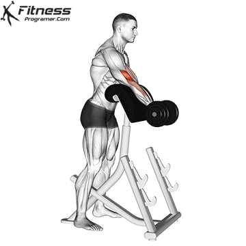

Short Head Training: Preacher Curl

Performing a preacher curl requires some initial set up. If your gym/training area does not have a preacher curl machine, grab a normal bench that you can change the incline of, and set it to an incline of about 60-70 degrees. Then, grab one of your dumbells, rest the working arm on the bench, and perform a curl. Make sure that your tricep is making contact with the bench through the entirety of the movement. Do this for about two to three intense working sets.
*IMPORTANT* When performing this excercise, make sure you do not use a weight that you cannot control. It is very easy to snap a bicep when lowering the weight, especially towards the end of the set when the repititions are becoming increasingly more difficult.